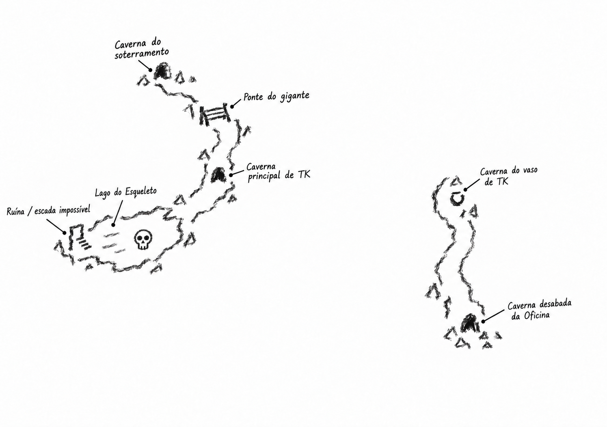

Caverna do soterramentoPonte do giganteCaverna principal de TKLago do EsqueletoRuína / escada impossívelCaverna do vaso de TKCaverna desabada da OficinaPaisagem
Construções metálicas, correntes, estacas e árvores de metal cercam as áreas percorridas. Cogumelos verdes iluminam algumas cavernas. A Guarita do Sentinela paira acima da região.
Almas caíam do céu quando o primeiro grupo chegou. Mais tarde, a frequência pareceu menor; os kyrion continuavam recolhendo os recém-chegados. A causa e a proporção dessa mudança são desconhecidas.
Tempo
Não foi reconhecido um ciclo regular de dia e noite na Gorja, nem movimento periódico da Guarita. Jeremias usou o crescimento das plantas como indicação de passagem do tempo, sem conseguir uma contagem precisa.
Perigos encontrados
O gigante cego captura almas e as conduz acorrentadas. Kyrion tentam recolher ou capturar os mortos. O lago junto ao esqueleto dissolve o que cai em sua água; arraias voadoras atacaram o gigante e abriram uma oportunidade para a fuga.
Pontos visitados
O mapa de Amaya
Levantamento a carvão, sem escala: da Caverna do soterramento à Ponte do gigante, à caverna principal de TK e ao Lago do Esqueleto; e, pelas informações de Jeremias, da caverna do vaso de TK à Caverna desabada da Oficina. A pequena ruína com a escada impossível está na margem esquerda do lago. As áreas ainda desconhecidas ficam em branco; não há ligação mapeada entre os dois trechos.